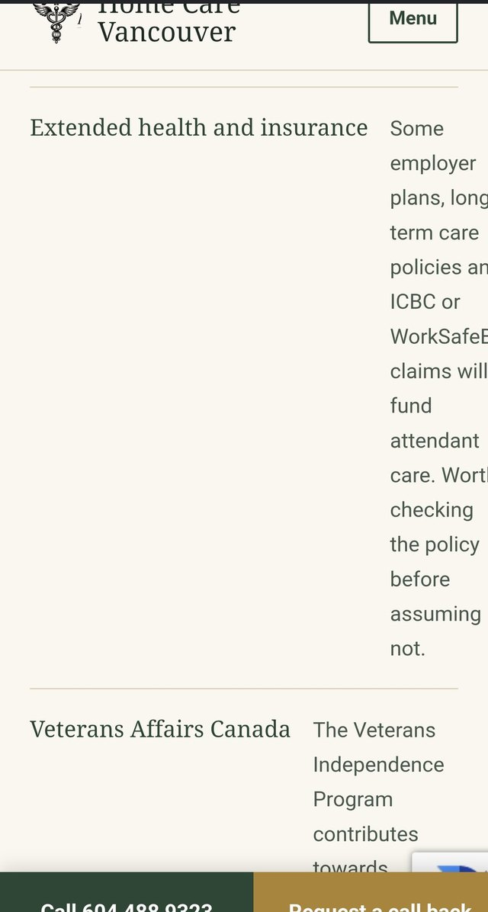
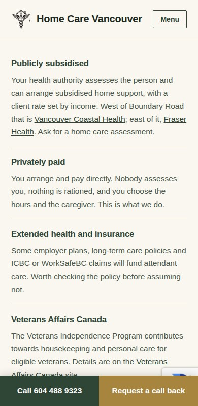

All four are live now. 3 September.
You were right, and it was a real fault rather than your mouse. The panel was positioned fourteen pixels below the tab, and those fourteen pixels were dead ground — the moment the pointer left the word "Services" on its way down, the site decided you had left the menu and closed it. You could never reach the links.
The gap is now bridged, and the menu also waits a moment before closing, so moving diagonally towards a link in the far corner works too. I tested it by walking the pointer down one pixel at a time and clicking the furthest link in both menus, on the live site.
It was there — it was just called Resources. That is what the tab has always said, so it is no wonder you went looking for a blog and did not find one. It now says Blog, on all 57 pages.
This one was a genuine break. The heading and its explanation were set to sit side by side, and the heading was not allowed to shrink — so "Extended health and insurance" took three quarters of the screen and left the explanation a column one word wide, with the rest running off the right edge of the phone. Measured on a 360px phone: the explanation had 4% of the width, and the page scrolled sideways by 54 pixels.


On a phone the two now stack, so the text gets the full width. Checked at 360, 390 and 430 pixels wide: no sideways scroll, nothing past the right edge.
You circled the phone number and wrote "font not good", and you had underlined three headings before that. Here is what was actually happening. The headings were set in a font called Iowan Old Style, which only exists on Apple machines. On your Windows laptop and on your phone it was falling back to Georgia — and Georgia draws numbers in the old printer's style, where the 0 sits at the height of a small letter and the 3 and the 9 hang below the line. So "604 488 9323" came out looking uneven and slightly wrong, which is exactly what you circled. On the most important line on the site.
The headings and the phone numbers now use the same clean face as the rest of the text, one weight heavier so a heading still reads as a heading. Numbers are locked to full height everywhere.
Nothing else on the sites was touched. The wording is all still yours to rewrite.